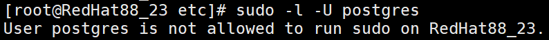

在执行数据库备份前需要检查并开启数据库安装用户sudo权限，否则将会导致部分命令执行失败。
操作步骤
- 使用PuTTY，登录PostgreSQL数据库主机。
- 执行以下命令查看用户是否有sudo权限。
sudo -l -U 数据库安装用户
- 如果该用户具有sudo权限，则会显示用户可以运行的命令列表，操作结束。

- 如果该用户没有sudo权限，则会显示一条消息，指出该用户不能执行sudo命令，请继续执行3。

- 如果该用户具有sudo权限，则会显示用户可以运行的命令列表，操作结束。
- 开启数据库安装用户sudo权限。
切换到root用户，执行visudo命令，进入配置文件，在文件末尾添加如下配置：
数据库安装用户名 ALL=(ALL) NOPASSWD:ALL